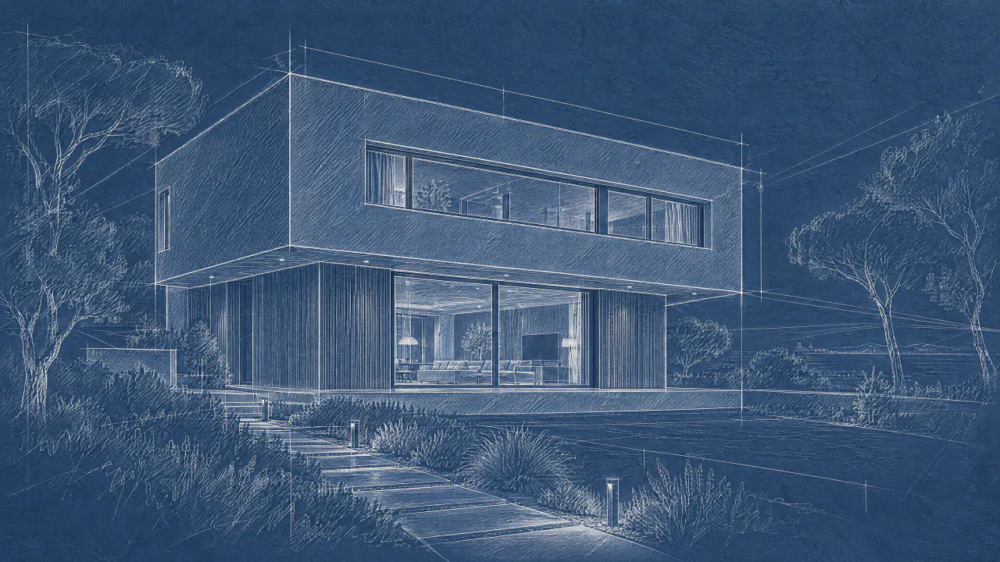
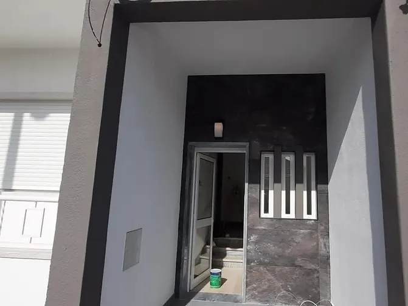
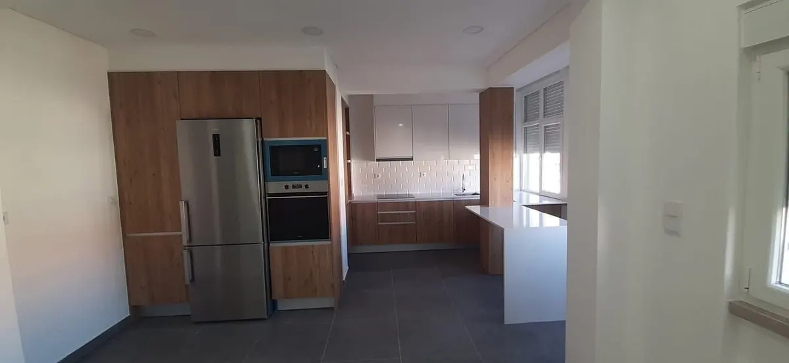
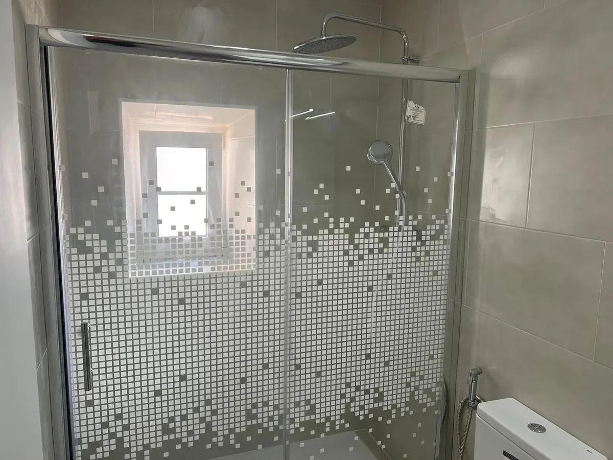
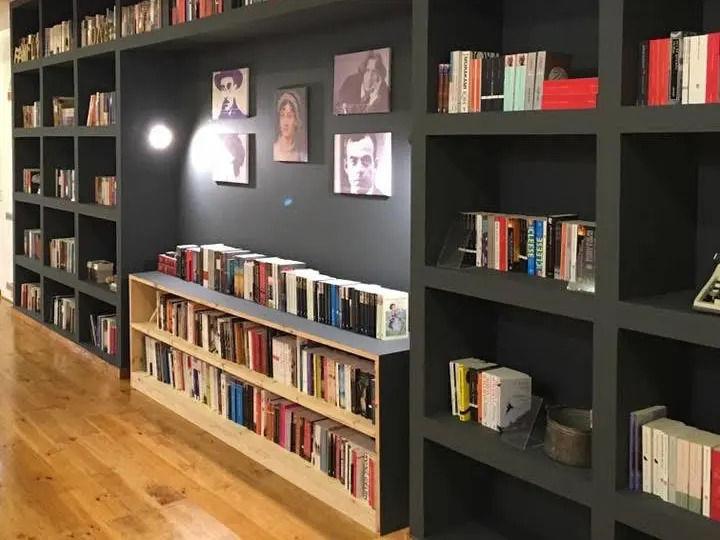
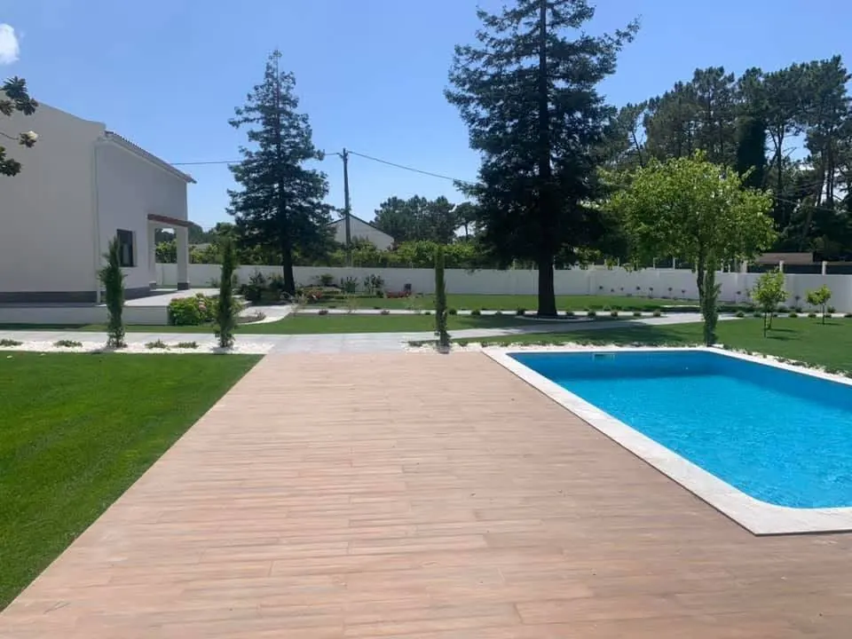
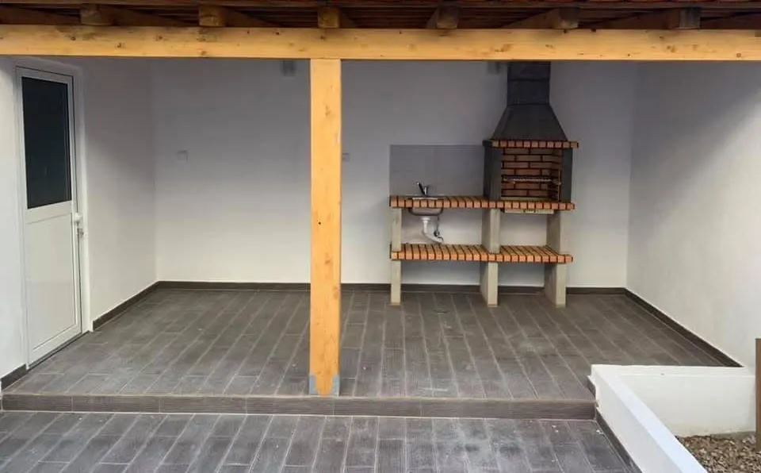
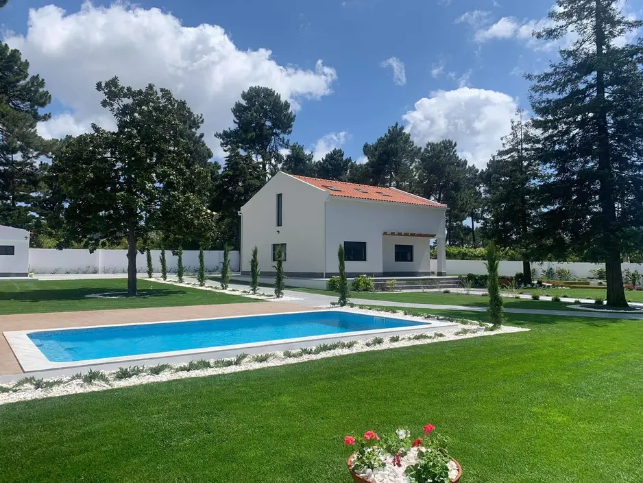

Construção civil e remodelações em Amora, no Seixal e na Margem Sul
O seu sonho, a nossa obra.
Da licença à entrega da chave, cada fase fica nas mãos de quem realmente sabe. Profissionais com mais de 30 anos de experiência, cada um na sua especialidade, coordenados por nós.
Burocracia e licenciamento. Antes de construir, abrir o caminho.
Análise de viabilidade, licenças e aprovações. Tratamos de todo o processo junto da câmara municipal e dizemos-lhe sempre em que ponto está, para que a obra comece com tudo em ordem.
Especialidades Arquitetura, engenharia e licenciamento
Planeamento e projeto. Cada traço tem uma razão.
Conceito, arquitetura e especialidades. Fazemos o projeto consigo e coordenamos as especialidades, para que, antes da primeira pedra, já se saiba a ordem dos trabalhos e quem entra em cada fase.
Especialidades Arquitetura, estruturas, águas e esgotos, eletricidade e climatização
Preparação do terreno. Tudo assenta nesta fase.
Limpeza, demarcações e infraestrutura inicial. Preparamos bem as bases, porque é delas que depende o resto da obra.
Especialidades Topografia, movimentação de terras e infraestruturas
Estrutura e construção. A casa ganha forma.
Fundações, estrutura, paredes e cobertura. Cada etapa é verificada antes de se avançar para a seguinte.
Especialidades Betão armado, alvenarias e coberturas
Instalações e envolvente. O que não se vê é o que mais dura.
Água, eletricidade, isolamento, caixilharias e fachadas. As redes são feitas por canalizadores e eletricistas de profissão, antes de se fechar a primeira parede.
Especialidades Canalização, eletricidade, isolamentos, caixilharia e fachadas
Cozinha. A cozinha, pensada ao centímetro.
Materiais, equipamentos e detalhes funcionais. Pontos de água, tomadas e extração de fumos ficam definidos antes de os móveis chegarem.
Especialidades Carpintaria, canalização, eletricidade e revestimentos
Casa de banho. Rigor em cada junta.
Revestimentos, loiças sanitárias e iluminação. Primeiro a impermeabilização, depois os revestimentos e só no fim as loiças: é esta ordem que evita infiltrações.
Especialidades Impermeabilização, canalização, revestimentos e iluminação
Sala de estar. Espaço para viver.
Pavimentos, paredes, tetos e ambiente. Luz, pavimento e cor das paredes escolhidos em conjunto, para a sala funcionar como um todo.
Especialidades Pavimentos, tetos falsos, pintura e iluminação
Quarto. O lugar do descanso.
Conforto, arrumação e iluminação. Roupeiros ajustados ao espaço, isolamento acústico e luz pensada para cada hora do dia.
Especialidades Carpintaria, isolamento acústico, pintura e eletricidade
Escadas. O detalhe que une os pisos.
Design, segurança e acabamentos. Degraus, guardas e corrimãos em madeira, pedra ou metal, à medida do espaço.
Especialidades Carpintaria, serralharia e cantaria
Exteriores e jardim. A casa encontra o jardim.
Pavimentos, iluminação e paisagismo. Muros, terraços e caminhos acabados com o mesmo cuidado do interior.
Especialidades Pavimentos exteriores, paisagismo e iluminação exterior
Entrega em chave na mão. O sonho já é casa.
Casa concluída, pronta a habitar. Percorremos a casa consigo, divisão a divisão, e só entregamos a chave quando estiver tudo como combinado.
Especialidades Coordenação de obra e verificação final
Sobre a LMDreams. Não acreditamos no faz-tudo. Acreditamos em especialistas.
A LMDreams é uma empresa de obras que reúne profissionais de construção com mais de 30 anos de experiência. Com eles, fazemos desde pequenas reparações a obras completas.
Um trabalho bem feito começa pela pessoa certa e nota-se no acabamento e na durabilidade. Acompanhamos de perto quem nos confia a obra, seja uma família ou um arquiteto, e dizemos com clareza o que foi feito e o que falta.
-
A eletricidade, com o eletricista.
-
A canalização, com o canalizador.
-
Os roupeiros, com o carpinteiro.
-
A pintura, com o pintor.
Cada especialidade é executada por um profissional com experiência nessa área. Nós coordenamos o conjunto.
- Experiência
- Mais de 30 anos
- Alvará
- N.º 101097-PAR, obras particulares, classe 2, emitido pelo IMPIC, I.P.
- Área de atuação
- Portugal continental
- Resposta
- No prazo máximo de 8 dias úteis
Profissionais especializados
Cada trabalho fica com quem o faz no dia a dia: a pintura com o pintor, os roupeiros com o carpinteiro.
Comunicação transparente
Falamos claro sobre o que vai ser feito e o que custa. Se alguma coisa mudar, fica a saber antes de avançarmos.
Planeamento rigoroso
Definimos a sequência dos trabalhos antes de começar, para que cada especialidade entre na altura certa.
Qualidade de execução
Preparamos bem as bases e verificamos cada fase antes de passar à seguinte.
Acompanhamento durante toda a obra
Da primeira visita à entrega, explicamos quem faz o quê e em que ponto está a obra.
Estamos a recrutar
Procuramos profissionais para as nossas obras.
Temos obras em curso e marcadas para os próximos meses, e vagas para pedreiros/as (m/f), com início imediato. Também recebemos candidaturas de outras especialidades da construção civil.
Trabalhamos sobretudo no Seixal, em Almada, Sesimbra, Lisboa e Sintra, a partir do nosso escritório em Amora.
Chamada para a rede móvel nacional.
Serviços de construção civil e remodelações. Do pequeno arranjo à obra completa.
Fazemos a remodelação de casas e obras em condomínios, escritórios e espaços comerciais, e recuperamos imóveis para quem os quer habitar, arrendar ou vender.
Construção civil
Construção e ampliação de edifícios, com cada fase entregue à equipa da especialidade.
Remodelação de cozinhas
Canalização, eletricidade, revestimentos e montagem, cada trabalho feito por quem o domina.
Remodelação de casas de banho
Loiças sanitárias, canalização, impermeabilização e revestimentos, numa sequência de trabalhos planeada.
Pavimentos e revestimentos
Cerâmica, pedra, madeira e vinílico, aplicados sobre bases bem preparadas e niveladas.
Recuperação de imóveis
Reabilitação de edifícios antigos, preservando o que tem valor e corrigindo o que já não serve.
Trabalhos exteriores
Muros, pavimentos exteriores, terraços e arranjos de logradouros.
Também fazemos
- Licenciamento e projeto
- Análise de viabilidade, projeto de arquitetura e especialidades, e todo o processo de licenciamento junto da câmara municipal.
- Remodelações completas
- Remodelação integral de casas e espaços comerciais, com todas as especialidades coordenadas por nós.
- Preparação e coordenação de obra
- Planeamento, sequência dos trabalhos e coordenação das várias especialidades ao longo da obra.
- Canalização
- Redes de águas e esgotos, substituição de tubagens e reparação de fugas por canalizadores experientes.
- Eletricidade
- Instalações elétricas novas e remodelação de quadros e circuitos, executadas por eletricistas.
- Pintura
- Pintura de interiores e exteriores, com as superfícies bem preparadas antes da primeira demão.
- Carpintaria
- Portas, roupeiros, rodapés e outros trabalhos em madeira, ajustados ao espaço.
- Tetos falsos e divisórias
- Tetos falsos e paredes em gesso cartonado, com isolamento e iluminação integrados quando fizer sentido.
- Isolamentos
- Isolamento térmico e acústico de paredes, coberturas e pavimentos, incluindo capoto (isolamento pelo exterior).
- Impermeabilizações
- Coberturas, terraços, varandas e zonas húmidas, para tratar as infiltrações na origem.
- Reparações e manutenção
- Reparações pontuais e manutenção de habitações, condomínios e espaços comerciais.
Cada obra é diferente. Diga-nos de que precisa e confirmamos se é um trabalho que fazemos. Pedir orçamento
Método de trabalho. Uma obra corre melhor quando todos sabem o que vem a seguir.
Estas são as oito etapas que seguimos consigo, do primeiro contacto à entrega.
- 01
Primeiro contacto
Pelo meio de contacto que preferir, ouvimos o que tem em mente e perguntamos onde fica a obra.
- 02
Visita ou análise do projeto
Visitamos o local ou analisamos o projeto e as fotografias que nos enviar.
- 03
Identificação das necessidades
Percebemos o que é preciso fazer e que especialidades vão entrar na obra.
- 04
Orçamento claro
Entregamos um orçamento escrito e gratuito, que diz o que está incluído e o que não está.
- 05
Planeamento dos trabalhos
Organizamos a ordem dos trabalhos e acertamos consigo o calendário da obra.
- 06
Execução por especialistas
Eletricistas, canalizadores, carpinteiros e pintores entram cada um na sua fase, coordenados por nós.
- 07
Acompanhamento e comunicação
Mantemo-lo a par do andamento da obra e, se o combinado tiver de mudar, falamos consigo antes de avançar.
- 08
Verificação final e entrega
Verificamos os trabalhos consigo, corrigimos o que for preciso e só depois entregamos a obra.
O que vai saber em todas as fases
- O que vai ser executado
- Quem é responsável por cada especialidade
- Quais são as principais etapas
- Como está a decorrer o trabalho
- Que alterações podem afetar o orçamento ou os prazos
Numa obra podem surgir imprevistos, como uma canalização antiga em mau estado ou uma parede que esconde humidade. Quando acontecem, explicamos o que se passa, as opções e o impacto no orçamento e no prazo, e só avançamos depois de decidir consigo.
Obras realizadas no Seixal, em Almada, Lisboa e Sintra. Obras que já entregámos.
Fotografias de obras realizadas pela LMDreams, publicadas com autorização dos clientes.
-

Remodelações
Recuperação e remodelação de prédio de três frações
Todas as frações remodeladas, com fachadas, cozinhas e terraço.
Ver antes e depois: Recuperação e remodelação de prédio de três frações -

Cozinhas
Cozinha em tom de carvalho e branco
Móveis em carvalho e branco, azulejo metro, bancada branca e península.
Ver antes e depois: Cozinha em tom de carvalho e branco num prédio -

Casas de banho
Casa de banho numa casa de dois pisos
Duche com resguardo de correr, cerâmica de grande formato e espelho iluminado.
Ver fotografias: Casa de banho numa habitação de dois pisos recuperada -

Interiores
Livraria-café: remodelação de espaço comercial
Loja transformada em livraria e café, com soalho de pinho e tetos falsos.
Ver antes e depois: Livraria-café: remodelação de espaço comercial -

Exteriores
Arranjos exteriores com piscina e jardim
Piscina com deck, relvado, caminhos em lajeta e canteiros de gravilha branca.
Ver fotografias: Arranjos exteriores com piscina e jardim -

Exteriores
Pátio com pérgola de madeira e churrasqueira
Pavimento cerâmico imitação madeira, canteiros com oliveira e zona coberta.
Ver fotografias: Pátio com pérgola de madeira e churrasqueira -

Construção
Ampliação de moradia para dois pisos
Paredes alteadas, segundo piso e cobertura nova numa moradia que tinha um piso e sótão.
Ver antes e depois: Ampliação de moradia para dois pisos -

Recuperação de imóveis
Recuperação de uma casa de dois pisos
Fachada reparada e pintada, caixilharia nova, escada em pedra e roupeiro embutido.
Ver antes e depois: Recuperação de uma casa de dois pisos
Quem já fez obra connosco.
Perguntas frequentes.
O que costumam perguntar-nos antes de uma obra.
Estão a contratar?
Sim. Temos vagas para pedreiros/as (m/f), com início imediato, e recebemos candidaturas de outras especialidades da construção civil. Pode candidatar-se na página Trabalhe connosco ou ligar para o +351 919 233 372 (chamada para a rede móvel nacional).
Em que zonas trabalham?
Temos escritório em Amora, no concelho do Seixal, e trabalhamos sobretudo no Seixal, em Almada, Sesimbra, Lisboa e Sintra. Obras noutras zonas de Portugal continental, sob consulta.
Têm alvará de construção?
Sim. Alvará de empreiteiro n.º 101097-PAR, para obras particulares, classe 2, emitido pelo IMPIC, I.P.
Fazem pequenas reparações ou só obras grandes?
Fazemos desde pequenas reparações e manutenção a remodelações completas, ampliações e construção.
Tratam do licenciamento e do projeto?
Sim. Analisamos a viabilidade, tratamos de todo o processo de licenças e aprovações junto da câmara municipal e fazemos o projeto de arquitetura e especialidades consigo.
Como é feito o orçamento?
Visitamos o local ou analisamos o projeto e as fotografias que nos enviar. Depois entregamos um orçamento escrito que diz o que está incluído e o que não está.
O orçamento é gratuito?
Sim. O orçamento é gratuito e respondemos no prazo máximo de 8 dias úteis.
Quanto tempo demoram a responder?
Respondemos no prazo máximo de 8 dias úteis.
Posso enviar fotografias do espaço?
Sim, por WhatsApp ou por e-mail. Ajudam a preparar a primeira conversa.
Quem faz cada trabalho?
Cada especialidade fica com um profissional dessa área: a eletricidade com o eletricista, a canalização com o canalizador, a carpintaria com o carpinteiro e a pintura com o pintor. Nós coordenamos o conjunto.
Que garantia têm as obras?
Os trabalhos estão cobertos pela garantia legal de execução, de acordo com a lei em vigor e com o contrato de cada obra.
E se aparecer um imprevisto a meio da obra?
Explicamos o que se passa, as opções e o impacto no orçamento e no prazo, e só avançamos depois de decidir consigo.
Contactos e pedido de orçamento. Tem uma obra em mente? Vamos falar.
Preencha o pedido de orçamento ou fale connosco por telefone, WhatsApp ou e-mail. Quanto mais nos disser sobre o trabalho, mais útil será a primeira conversa. O orçamento é gratuito e respondemos no prazo máximo de 8 dias úteis.
Chamada para a rede móvel nacional. Se tiver fotografias do espaço, pode enviá-las por WhatsApp ou e-mail.
Temos vagas para pedreiros/as (m/f): candidate-se aqui.
- Telefone
- +351 919 233 372 (chamada para a rede móvel nacional)
- mendes3pm@gmail.com
- Horário
- Segunda a sexta, 8h00 às 19h00
- Área de atuação
- Portugal continental
- Escritório
- Praceta Armando José Fernandes, n.º 12A, r/c esquerdo, 2845-011 Amora